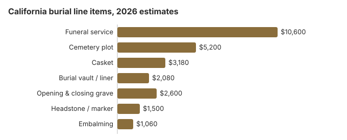

Burial Costs in California
A traditional burial in California usually totals $24,160 to $28,660 on our estimates: about $10,600 for the funeral service, $5,200 for a plot, and the rest for the casket, vault, grave opening and headstone. California endowment care cemeteries must put part of every plot sale into a care fund, and a death certificate now costs $26. The sections below price each item and explain the state rules that affect the bill.
California Burial Costs by Item
| Line item | California estimate | What families pay |
|---|---|---|
| Funeral service | $10,600 | $7,950 – $13,780 |
| Cemetery plot | $5,200 | $2,600 – $10,400 |
| Casket | $3,180 | $1,060 – $8,480 |
| Burial vault / liner | $2,080 | $800 – $10,000 |
| Opening & closing grave | $2,600 | $500 – $3,000 |
| Headstone / marker | $1,500 | $500 – $5,000+ |
| Embalming | $1,060 | $500 – $1,500 |
How we got these numbers: nothing in this table was quoted by a California cemetery or funeral home; each line is our own modeled estimate, so treat it as a planning range and not as advice. We publish how the model works, and our disclaimer spells out where it falls short.

Add every cemetery charge to the funeral and a California burial lands between $24,160 and $28,660, with the casket, marker and type of cemetery making most of the difference.
Burial Options in California
Bringing Down a California Burial Bill
Where California families find savings:
- Ask about green or hybrid sections: a number of California cemeteries have opened them quietly and do not list them on their websites.
- Look at conservation burial grounds: they are better established in California than in most states, keep the land protected permanently and charge simply, usually $4,240-$7,420 in total, against $24,160 or more for a conventional California burial.
- Mention cremation quotes when you negotiate: about 65% of California deaths end in cremation, so burial providers often have room on price they will not offer unprompted.
What Makes California Burial Different
California's long coastline and public lands make scattering cremated remains an easier option here than in much of the country, and in Los Angeles more families now pick cremation and scattering over a grave. Families who still want burial usually find the lowest plot prices at green burial grounds and at Jewish and LDS cemeteries.
Burial Resources
- Funeral Consumers AllianceNonprofit consumer advocacy for funeral pricing
- Headstone & Monument GuideCosts, types, and buying tips
- Green Burial OptionsEco-friendly and natural alternatives
- Best Online Casket RetailersCaskets bought online often cost less
- Best Burial InsuranceCompare plans to cover burial expenses
Compare Funeral Costs
- Average Funeral Cost in 2026National cost breakdown with real prices
- Cremation vs. Burial Cost ComparisonSide-by-side price comparison to help you decide
- Funeral Cost BreakdownEvery line item explained: know what you're paying for
- Cheapest Funeral OptionsLower-cost alternatives, with typical price ranges
- Direct Cremation: Most Affordable OptionNFDA 2023 median $2,645 with a family-supplied container (latest available)
- How to Compare Funeral PricesStep-by-step guide to getting the best price
A casket or marker bought outside the California funeral home or cemetery is often cheaper; our online casket retailer guide and headstone cost guide show what to expect, and the payment assistance guide lists help if the total is out of reach.
California Burial Questions Families Ask
What does a California burial cost in total?
Our estimate starts with about $10,600 for the funeral service and $5,200 for the plot. Then come the casket ($3,180), the vault ($2,080), opening and closing ($2,600) and a headstone ($500-$5,000), which brings a California burial to $24,160–$28,660.
Does California law require a burial vault?
California law does not require one, but a cemetery may. The state Cemetery and Funeral Bureau's consumer guide says a cemetery can require an outer burial container to keep the grave from settling, and that you do not have to buy that container from the cemetery, as long as it meets the cemetery's standards for size, shape and material.
The same guide explains the two types. A vault surrounds the casket completely, while a grave liner covers only the top and sides, and neither one stops decomposition. If a California cemetery insists on its own vault, or says a sealed vault preserves the body, you can raise it with the Bureau.
Which choices lower a California burial bill most?
Choose direct burial, which leaves out embalming, a viewing and a funeral home ceremony; it is normally the cheapest burial on a California price list. You can buy the casket elsewhere, and the FTC Funeral Rule bars a handling fee. For an eligible veteran, a national cemetery grave, opening and closing, and headstone cost the family nothing.
How should I compare California cemeteries?
Ask every California cemetery for its full price sheet, including endowment care, opening and closing, and setting fees for the marker. Prices can differ a great deal within one city, and green or hybrid sections often run 30-50% below standard plots. Conservation burial grounds are better established in California than in most states.
What does each part of a California burial add up to?
Line by line, our California figures are: funeral service about $10,600, plot about $5,200, casket about $3,180, vault about $2,080, opening and closing about $2,600 and a headstone at $500-$5,000, for a usual total of $24,160 to $28,660.
Can a California family choose a natural burial?
Yes. More California cemeteries now have green sections, which use a biodegradable container and skip embalming and a vault, and the total usually comes in under a conventional burial. Where no green ground is close by, some families choose a hybrid: a standard plot, but no embalming.
More for California
California endowment care, permits and death certificates
When you buy a plot in a California endowment care cemetery, part of the price goes into a trust that pays for upkeep after the cemetery is full. Since January 1, 2024, the cemetery must deposit at least 10% of the net price or $250, whichever is greater, for each grave or crypt, and 10% or $150 for each niche, with the required deposit capped at $10,000 per space (Cal. Health & Safety Code § 8738). Scattering cremated remains in a cemetery garden carries its own 10% or $150 deposit. Ask the cemetery to show the endowment care amount as a separate line, so you know it is not an extra fee on top of the price.
Before a burial, the local registrar issues a permit for disposition (Health & Safety Code § 103050); the funeral home usually files for it along with the death certificate. Certified copies of a California death certificate cost $26 each from January 1, 2026, up from $24, after AB 64 (California Department of Public Health, checked October 29, 2026). An authorized copy, the kind banks and insurers want, needs a sworn statement, notarized if you order by mail; an informational copy does not, but it is marked as not valid to establish identity.
- Ask whether the plot price includes endowment care, and get the amount in writing.
- Count accounts before ordering: at $26 each, death certificates add up fast.
- Order authorized copies through the county recorder or the funeral home to avoid waiting on the state.
Who oversees California burials, and where to get help
The California Cemetery and Funeral Bureau (916-574-7870) licenses the funeral homes that handle California burials, and it also licenses many private cemeteries. Religious, public and district cemeteries are often outside its reach, so before you buy a plot, ask the cemetery who regulates it and where a complaint would go.
California is not one of the nine states the Funeral Consumers Alliance lists as requiring a funeral director, so a family can arrange a burial directly with the cemetery. The cemetery's own rules on the grave and container still apply, and no burial can happen until the permit is issued (Health & Safety Code § 103050). Cremation in California has no set waiting period, but it too needs a permit.
If no one can pay
If the estate cannot pay and no relative in the state can be found to take charge, the coroner of the county where the person lived takes the remains and buries or cremates them as the county does for its indigent dead, under Cal. Health & Safety Code § 7104. Some counties cremate rather than bury, so ask early if burial matters to the family.
Veterans
A California national cemetery charges an eligible veteran's family nothing for the grave, its opening and closing, the liner or the headstone. National cemeteries accepting burials in the state are Bakersfield (661-867-2250), Los Angeles National Cemetery Annex (310-268-4675, cremated remains only), Miramar in San Diego (858-658-7360), Riverside (951-653-8417), Sacramento Valley in Dixon (707-693-2460) and San Joaquin Valley near Gustine (209-854-1040). State and tribal veterans cemeteries are the California Central Coast Veterans Cemetery (831-393-9371), the Northern California Veterans Cemetery (866-777-4533), Big Sandy Rancheria Veterans Cemetery (tribal, 559-374-0066) and Yurok Veterans Cemetery (tribal, 707-482-1350). Cemetery details come from the VA National Cemetery Administration.
Before you buy a California plot
- Get the cemetery's own price sheet, since the plot, endowment care, grave opening, vault or liner and marker setting are normally on a separate bill from the funeral home's.
- Request the cemetery's written rules on vaults, opening times and permitted markers.
- If the county may be paying, ask the county coroner's office whether burial is possible or only cremation before you buy a plot.
- For a veteran, call Riverside or the nearest national cemetery about eligibility; the DD214 discharge record is usually the first thing they ask for.
- If a funeral home or licensed cemetery charges more than its posted prices, call the bureau at 916-574-7870.